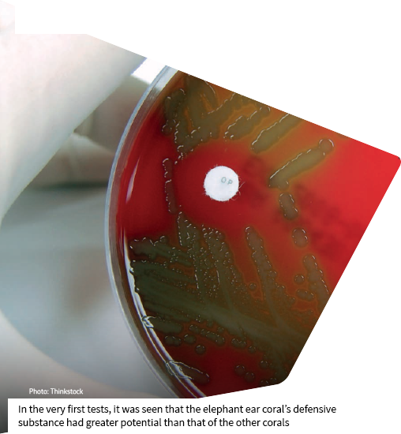
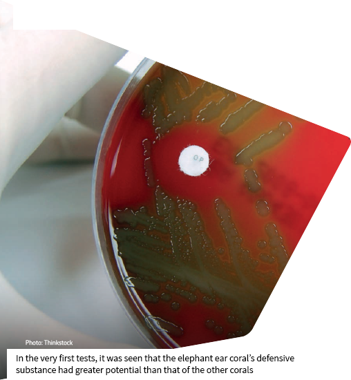

Of the 600,000 coral species found in the world, 41 live off the coast of Brazil. Fixed and vulnerable beings, corals function as sentinels of the sea, protecting the coast from waves and erosion, and hosting the second richest biodiversity on the planet, behind only tropical forests. In this surprising marine world, corals fight for survival in a competition for food, space and shelter, in a kind of rich chemical warfare featuring the release of defensive proteins on the bottom of the ocean.
This production of potent chemical substances that help to determine which species are victorious and which are left behind on the path of evolution has over the last 10 years become one of the targets of scientific research to find a cure for diseases arising from bacteria, viruses and fungi. Brazilian coral reefs, which extend for 3,000 km along the coast, concentrated off northeast Brazil, may hold the cure for the hospital-acquired infections that afflict patients with pneumonia and gastrointestinal diseases caused by the super-bacterium Klebsiella pneumoniae carbapenemase (KPC)..